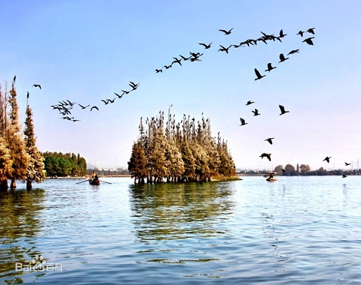
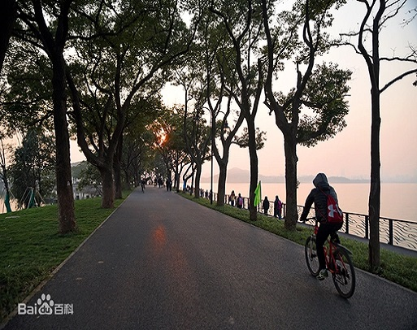
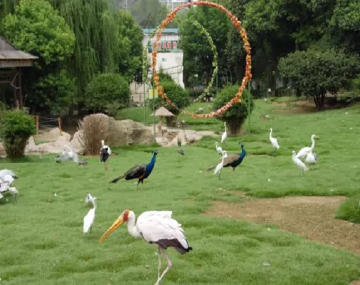
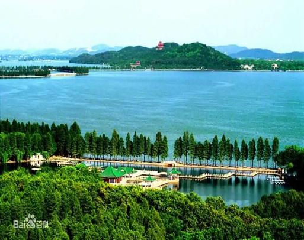
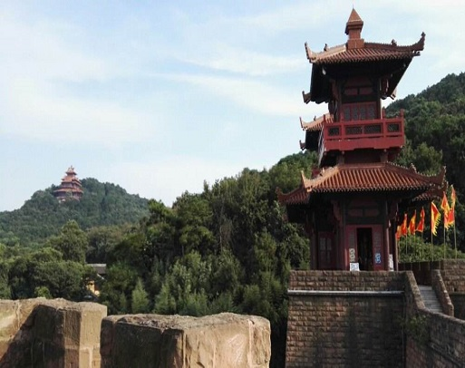

<html>

<head>
    <meta charset="UTF-8">
    <!-- <meta name="viewport" content="width=device-width, initial-scale=1.0"> -->
    <title>东湖绿道</title>
    <!-- <link rel="shortcut icon" type="image/x-icon"> -->
    <!-- <link rel="stylesheet" href="./css/heinav.css"> -->
    <!-- <link rel="stylesheet" href="./css/bainav.css"> -->
    <link rel="stylesheet" href="./css/lbt.css">
    <!-- <link rel="stylesheet" href="./css/shangpin.css"> -->
<!--    <style>
        body {
            margin: 0;
        }

        h1,
        h2,
        h3,
        h4,
        h5,
        h6,
        p {
            margin: 0;
        }
    </style> -->
</head>

<body>
<!--    <header>
        <nav>
            <div class="hsbj-nav">
                <div class="nav">
                    <a href="#">关于武汉</a>
                    <a href="#">风景展示</a>
                    <a href="#">新闻动态</a>
                    <a href="#">景点周边</a>
                    <a href="#">景点预约</a>
                    <a href="#">吃喝玩乐</a>
                    <a href="#" class="you">登录</a>
                    <a href="#" class="you">注册</a>
                </div>
            </div>
        </nav>
        <nav>
            <div class="bsbj-nav">
                <div class="nav">
                    <div class="logo"></div>
                    <a href="#">景点介绍</a>
                    <a href="#">网红景点</a>
                    <a href="#">游客评价</a>
                    <a href="#">打卡圣地</a>
                    <a href="#">投诉专栏</a>
                    <a href="#">素质之星</a>
                    <button class="sousuo">搜索</button>
                    <input type="text" placeholder="东湖绿道">
                </div>
            </div>
        </nav>
    </header> -->

        <div class="lbt">
        </div>

    <!-- <section class="sp-bg">
        <div class="sp">
            <h1>图文博览</h1>
            <div class="sp-lb">
                <div class="sp-img">
                    
                    <h3>东湖落雁岛</h3>
                    <p class="mediumpurple">落雁岛位于武汉东湖风景区磨山景区旁，与磨山楚天台隔湖相望，交通便利，舟车皆可上岛，岛上风景秀美，空气清新，景色怡人，古朴自然，浑然天成。</p>
                </div>
                <div class="sp-img">
                    
                    <h3>绿道骑行区</h3>
                    <p class="mediumpurple">“湖中道”全长6公里，起点湖光序曲（东湖海洋世界旁），经由九女墩至磨山北门。行走在这段绿道上，视野开阔，湖光潋滟。</p>
                </div>
                <div class="sp-img">
                    
                    <h3>东湖鸟语林</h3>
                    <p class="mediumpurple">武汉东湖鸟语林位于美丽的东湖风景区，是湖北省唯一独具特色鸟类观赏、鸟艺表演、科普、救护为一体。从世界各地征集各种珍稀鸟类200多种8000余只。</p>
                </div>
                <div class="sp-img">
                    
                    <h3>听涛风景区</h3>
                    <p class="mediumpurple">东湖听涛风景区位于东湖西北岸，是东湖风景区中最早建成开放的景区。该景区建有以纪念爱国诗人屈原为主体的景点群，还有新建的沙滩浴场，是夏夜人们纳凉避暑的好地方。</p>
                </div>
                <div class="sp-img">
                    
                    <h3>东湖磨山区</h3>
                    <p class="mediumpurple">东湖磨山景区位于东湖东岸，三面环水，六峰相连，山水相依，素有“十里长湖，八里磨山”之称，风景极佳。依次建有楚天极目、天台晨曦、常春花苑、朱碑亭等四景。</p>
                </div>
            </div>
        </div>
    </section> -->
</body>

</html>